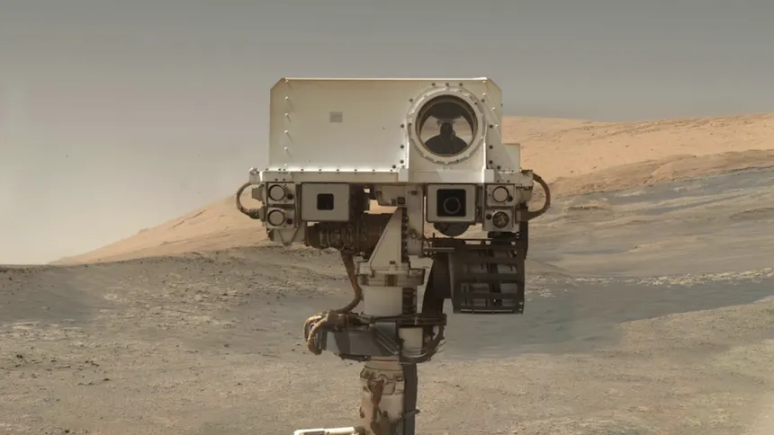
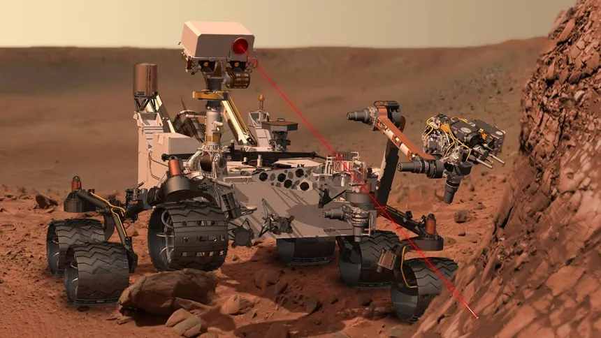
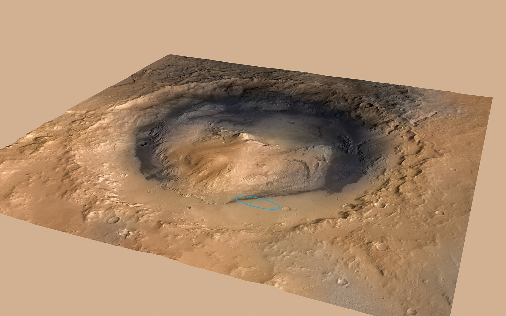
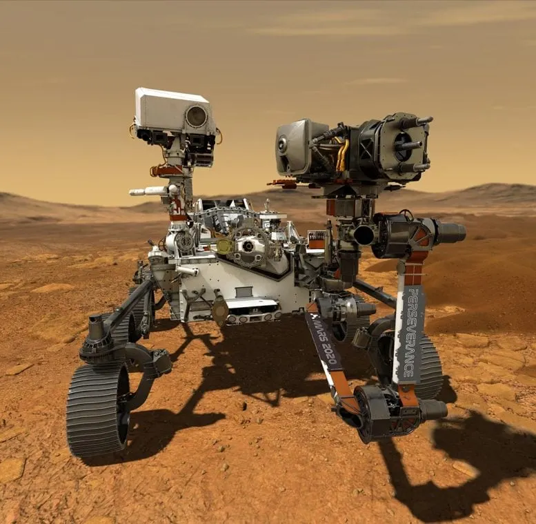
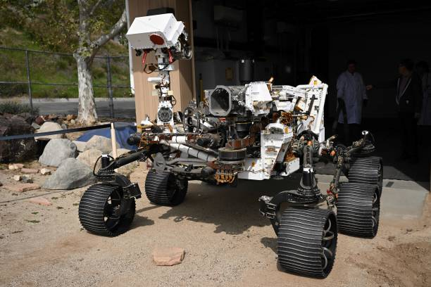
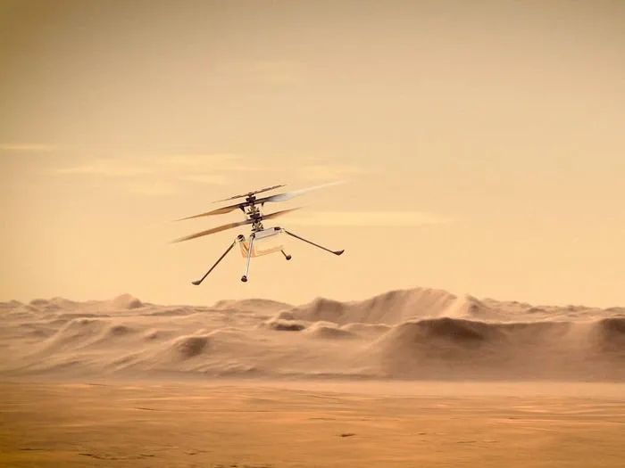

Mars Rover Mission History
Explore the timeline of robotic exploration on Mars, from the first successful landings to today's advanced mobile laboratories.
Exploration Timeline
1997
Sojourner
First successful Mars rover (Pathfinder mission)
Operated for 83 sols (Martian days)
2004
Spirit & Opportunity
Twins designed for 90-day missions
Opportunity lasted 14+ years (longest Mars mission)
2012
Curiosity
Car-sized rover still exploring Gale Crater
First to drill into Martian rocks
2021
Perseverance
Currently searching for ancient life
Carries the Ingenuity helicopter

Curiosity Rover
Launched: Nov 26, 2011 | Landed: Aug 6, 2012
Mission Goals
- Assess Martian habitability
- Study climate and geology
- Prepare for human exploration
Key Discoveries
- Evidence of ancient freshwater lakes
- Organic molecules in rock samples
- Radiation measurements for astronaut safety
Technical Specs
- Size: Car-sized (3m long)
- Weight: 899 kg (1,982 lbs)
- Power: Nuclear (RTG)
- Instruments: 10 science payloads



Perseverance Rover
Launched: Jul 30, 2020 | Landed: Feb 18, 2021
Mission Goals
- Search for signs of ancient microbial life
- Collect samples for future return to Earth
- Test oxygen production from CO2
Key Features
- Carries Ingenuity helicopter
- Advanced sample caching system
- Upgraded cameras and microphones
Technical Specs
- Size: Similar to Curiosity but heavier
- Weight: 1,025 kg (2,260 lbs)
- Power: Nuclear (RTG)
- Instruments: 7 primary science tools


Rover Comparison
| Feature | Curiosity | Perseverance |
|---|---|---|
| Launch Date | Nov 26, 2011 | Jul 30, 2020 |
| Landing Date | Aug 6, 2012 | Feb 18, 2021 |
| Mass | 899 kg | 1,025 kg |
| Power Source | RTG (Nuclear) | RTG (Nuclear) |
| Primary Mission | Habitability | Astrobiology |
| Landing Site | Gale Crater | Jezero Crater |
Continue Exploring
Mission Updates
Follow the latest news from Curiosity and Perseverance
Raw Images
View unprocessed photos at Curiosity's image gallery